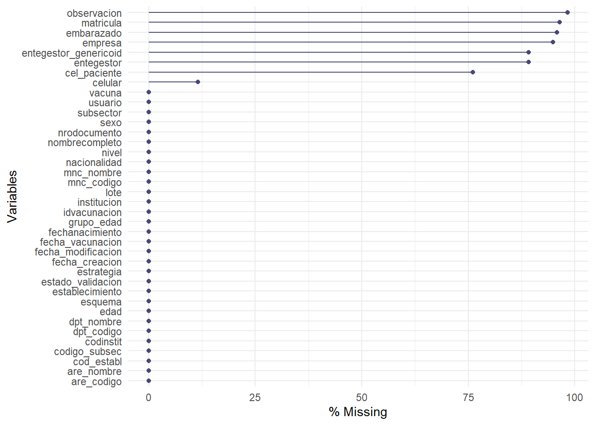
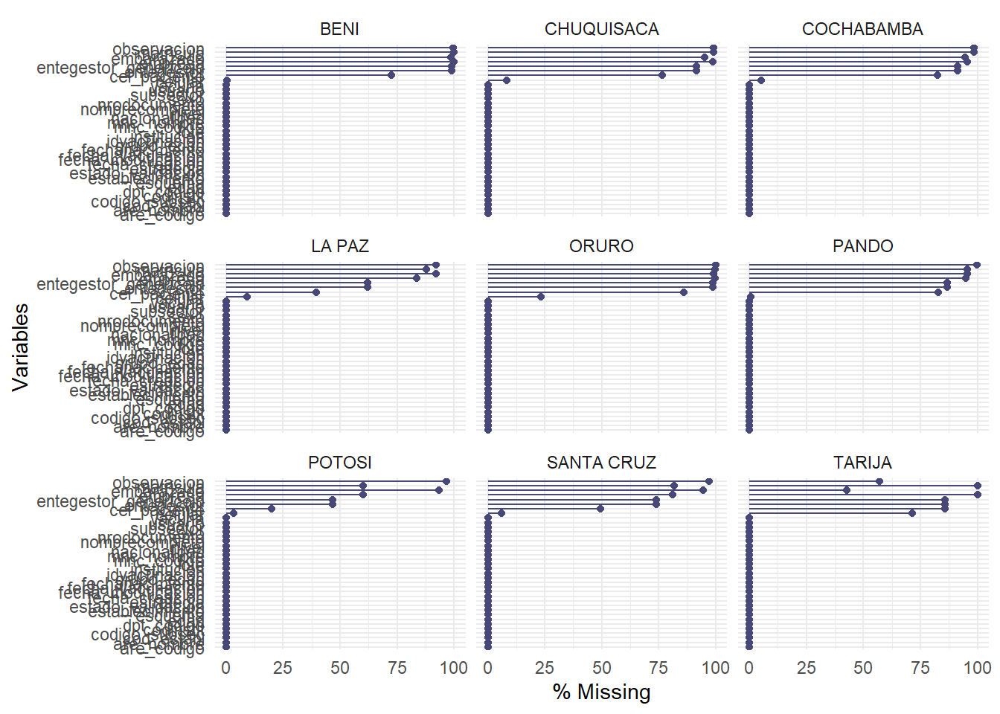
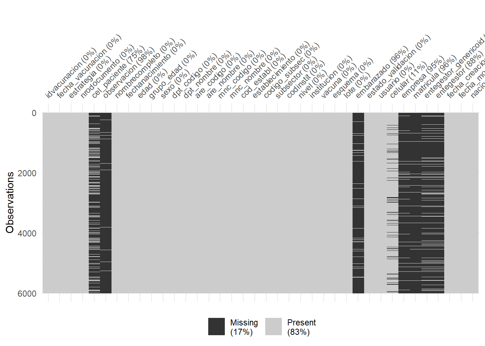
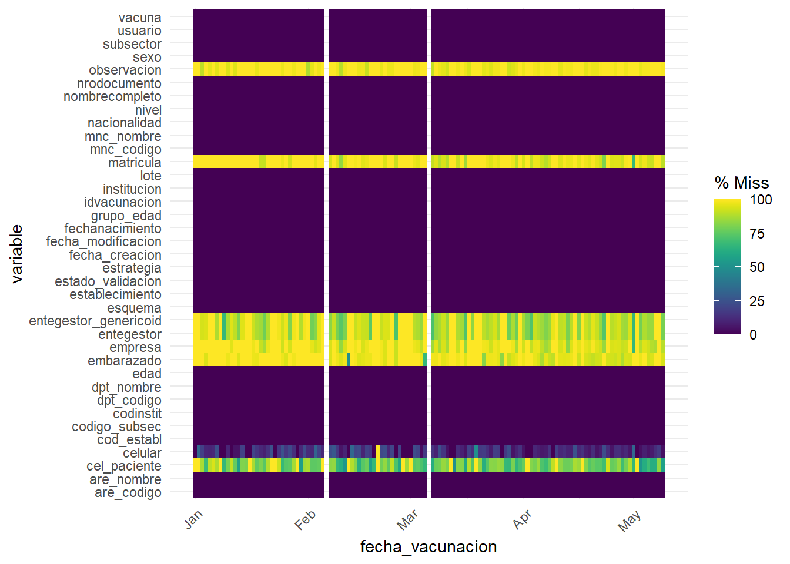

# 1. Librerías -----------------------------------------------------------------
# Instalar y cargar librerías
pacman::p_load(rio, # importar y exportar bases de datos
tidyverse,
janitor,
lubridate,
naniar #paquete nuevo en esta lección
)
# 2. Cargar base de datos ------------------------------------------------------
# Cargar datos de dosis de vacunas covid administradas
data <- import("data/2022-07-19_rnve-rutina.csv")2 Completitud
Es un indicador que sirve para identificar que la totalidad de la información definida como necesaria por el país, se esté registrando en el sistema.
Este indicador nos sirve para evaluar la calidad de los eventos de registro. Analizando que se esté capturando la información de forma efectiva al momento del ingreso al sistema. En los sistemas modernos de RNVe la información definida como necesaria por el país está acompañada de reglas de validación/reglas de negocio que evitan que se pueda almacenar un registro que no tiene información disponible en la variable.
2.1 Metodología
El cálculo de completitud se define en 2 pasos: Hola que tal 1- La determinación de las variables definidas como necesarias para el país. 2- El cálculo del indicador utilizando la fórmula.
2.1.1 Fórmula
\[ (\frac{Número\:de\:registros\;con\;totalidad\;de\;variables\;obligatorias}{Número\;total\;de\;registros})*100 \]
2.1.2 Realizando cálculos en R
Cargamos paquetes y bases de datos
Transformamos datos para convertir todos los datos faltantes expresados como texto vacío al formato de r “NA”
# Convirtamos todos los "" a NA en la base de datos
data_processed <- data %>%
mutate(fecha_vacunacion = as_date(fecha_vacunacion, format="d%/%m/%Y")) %>%
mutate(across(where(is.character), ~na_if(., "")))Utilizamos el paquete Naniar para calcular los casos completos.
# 2. En el curso anterior realizamos el cálculo de completitud manualmente.
# En esta sección utilizaremos la librería naniar para realizar estos cálculos
# de forma automática y para visualizar los resultados de datos faltantes.
completitud_naniar <- data_processed %>%
select(idvacunacion, nombrecompleto, fecha_vacunacion,
fechanacimiento, nrodocumento, establecimiento,
vacuna, lote, esquema) %>% #Seleccionamos las variables que vamos a considerar
pct_complete_case()# %>% #calculamos el porcentaje de faltantes
#n_miss() #también pode calcular el número de faltantes Porcentaje de casos completos:1002.1.3 Algunas visualizaciones interesantes del paquete naniar
2.1.3.1 Visualización de porcentaje de faltantes por variable
data_processed %>%
gg_miss_var(show_pct = TRUE)
2.1.3.1.1 Por departamento y variable
data_processed %>%
gg_miss_var(show_pct = TRUE, facet = dpt_nombre)
# En este caso seleccionamos dpt_nombre como la variable de faceta pero podemos
# usar otras.2.1.3.2 Visualización tipo tabla de una muestra del dataframe
# 4. Visualizacion tipo tabla de una muestra del data frame
vis_miss(data_processed %>% slice_sample(n=6000))
Visualizaciones muestales son sumamente importantes para trabajar con registros nominales. En este caso utilizamos la función slice_sample del paquete dplyr para obtener una muestra aleatoria de la base de datos
2.1.3.3 Línea del tiempo de ingreso de datos faltantes
# Línea del tiempo de visualización de ingresos faltantes por fecha de creación
# Les dejo la última línea comentada, Esta requiere muchos recursos para ejecutar
# empeora con el tamaño de la base de datos.
gg_miss_fct(data_processed %>% slice_sample(n=6000) , fecha_vacunacion)